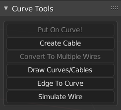
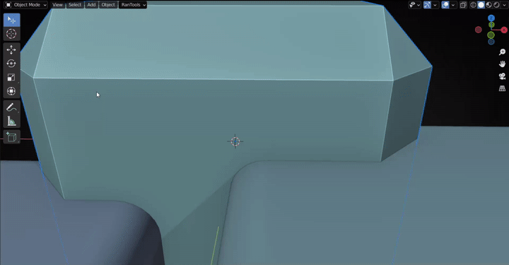
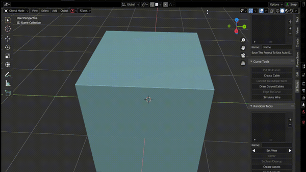

Curve Tools¶
Press Shift +E to access Curve Tools Pie Menu (or use the Curve Tools section from the N-panel)


Create Cable¶
Select Create Cable from the pie menu (or from the N-Panel ).
Click on any 2 points to create a cable. Press C to switch between NURBS and BEZIER curves. Hold CTRL while Clicking to Snap to the center of the face(Average of all vertex coordinates) Hold SHIFT while clicking to snap to the center of the Bounding Rectangle.
There are 2 (3 for NURBS) empties attached to each created cable to make it easier to manipulate.You can move any empty to change position and shape of the cable.  Note:- When You Create a Cable snapping mode is automatically switched to Face Mode,so you can reposition the empties easily by holding down CTRL
Curve Modal¶
From the RanTools menu (E) select Curve Adjust(or Press E followed by C for faster access) to start the curve adjustment modal.
Resolution¶
Hold CTRL and use the mouse wheel to change the curve resolution.
Radius¶
Press R to toggle radius adjustment and move the mouse left or right to change the radius.
Tension¶
Press T or hold down ALT to toggle Tension adjustment and move the mouse left or right to change the tension.
Press S or D to restrict the adjustment to one of the endpoints. Press A to adjust both(default)

Tilt¶
Press Q or W to adjust the tilt of A and B point respectively.
Note: Tilt might not be noticable if the curve is just a simple Cylindrical shape.
Extrude (Flat Cables):¶
Press E to toggle Extrude adjustment and move the mouse left or right to change the Extrusion amount. Useful for creating flat cables.

Fill¶
Toggle end fill using the F key.
Separation¶
Press B to toggle Separation adjustment and move the mouse left or right to change the separation amount. Very useful if you are using caps and the cable is intersecting with it.

Caps¶
Turn on cap picker by pressing C and click on any object to use it as a cap.Press U to scale and O to offset the caps.

Select Empties¶
Empties are hidden by default so that they dont clutter the viewport but if you wont to change the curve shape and move the empties you can unhide and select them from the curve modal itself by pressing Z or X .
Multiple Wires¶
With any curve selected, click the multiple wires button (from either Pie Menu or the N-Panel ) to convert the curve to multiple wires.
Use the following buttons to change wire parameters:
F : Switch between parallal and radial wires
G : Change axis for parallel wires
V : Adjust Twist of wires
E : Wire Radius/Offset
R : Radius of individual wires
Mouse Scroll : Number of wires

Everything is non-destructive, i.e. you can change any parameter of the wire at any time using the Curve Adjust Modal
Simulate Curve/Wire¶
With any curve/wire selected, click the Simulate Wire button to simulate the cable under the effect of gravity. The new simulation V2 Also interacts with other collision objects. (You can switch to V1(non-interactive) via the P- Cutter Panel or RanTools Dropdown menu to the right of the View,Select,Add,Object menus). Just make sure that the objects you want the cable to collide with also have collision enabled (if the cable is just sliding instead of staying on the surface, make sure the friction of the objects is set to a high value like 15-20).

During simulation, press D to increase wire length (hold Alt to decrease) and C to increase Collision Distance (hold Alt to decrease). Note: This removes the empties associated with the curve, making the curve destructive; however, you can simulate the curve again using the same procedure.
Edge To Curve¶
In edit mode, select the edges you want to convert to a curve and click Edge To Curve (pie menu or N-Panel ).Selected edges will be duplicated and converted to curves.You can change various parameters in the lower left panel. Note:-In Edit mode, this option is available under the Edit mode pie menu (since Shift+E is already occupied by Blender), which is accessed by Shift+Q.

Draw Cables¶
In Object mode, click Draw Cables. A new Curve object is created and you enter Edit mode with the Draw tool enabled and can begin drawing curves on surfaces. Surface Offset and other settings can be changed using from the topbar menu.

Put On Curve¶
Put any object on any curve.First select the object you want to place on the curve, and then select the curve you want to place the object on and click put on Curve. An array modifier and Curve Modifier are added to the object.